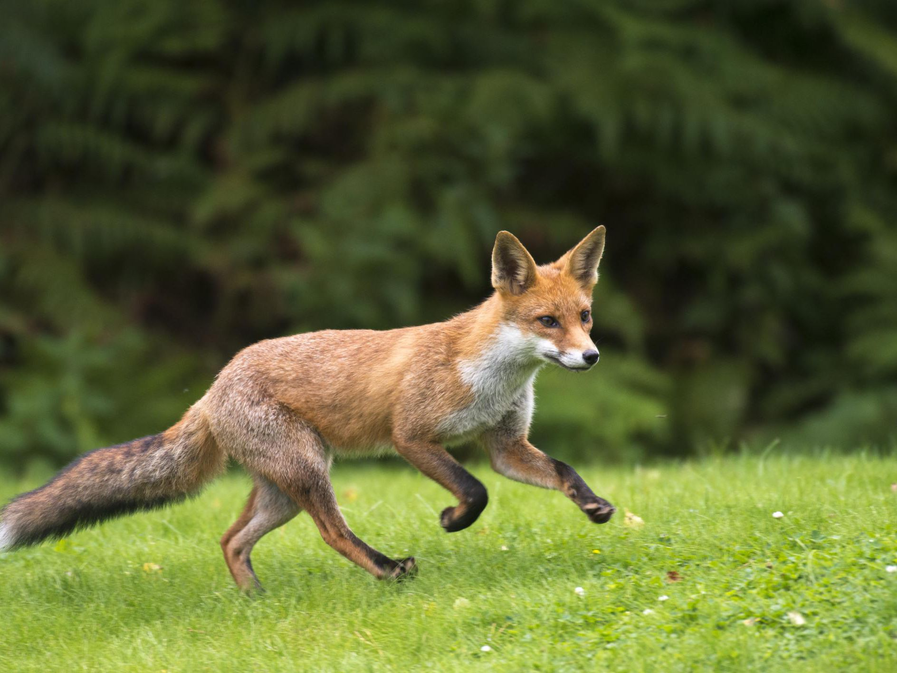

With a bushy tail, a natural survivalist. The fox, ever adaptable, is equally at home in our woodlands as it is in our city streets. With a diet that includes everything from birds and beetles to rabbits and rats, it is at the top of the woodland food chain.
The fox is easily identified by its russet-red hair, sharp ears, and bushy tail. They are often smaller than people expect, weighing 5–8 kg and standing roughly 40cm at the shoulder.
Foxes are opportunistic omnivores, allowing them to thrive in a variety of environments. Rabbits and field voles are popular prey, but a fox's diet can also include worms and insects, as well as deer fawns and fruit. Urban foxes will still seek live prey, but they will also eat any food that has been discarded by humans.
Foxes can be found all over the United Kingdom and can thrive in a variety of environments. The amount of food available determines the number of foxes in a given location. A fox's territory can be as small as 25 hectares in metropolitan settings, where food is generally plentiful. A territory in upland Scotland, where food is scarcer, may be as vast as 4,000 hectares.
Types of Foxes:
5 Places Foxes Call Home
For More Information Click Here
To Refresh the page Click Here